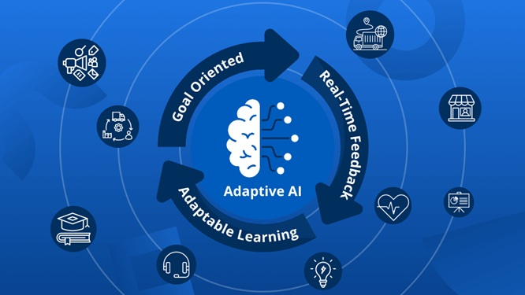

Title
Adaptive Learning: Human and Machine Perspectives
Introduction
Adaptive learning is reshaping how individuals and systems respond to feedback and change.
It encompasses the ability to learn from past experiences and adjust dynamically to new situations.
This principle applies both to educational technology and organizational change leadership.
Illustrative Image

Figure: Adaptive AI
Description
In educational technology, machine learning enables adaptive learning systems that personalize educational content.
These systems analyze a learner's performance and interactions to tailor content delivery, supporting individual growth at scale.
In organizations, adaptive learning reflects a leader’s capacity to evolve based on feedback, results, and real-world shifts.
Objective
To explore how adaptive learning manifests in both machine learning environments and human leadership,
highlighting their shared reliance on feedback, flexibility, and iterative improvement.
Process
This artifact was developed by analyzing machine learning-enabled education tools and leadership theory.
It draws parallels between algorithmic adaptation in machines and behavioral adaptation in humans,
providing a holistic view of learning systems.
Tools/Technologies Used
- Machine Learning Algorithms (e.g., supervised models for education platforms)
- Educational Technology Systems (e.g., adaptive learning engines)
- Change Leadership Frameworks (e.g., Kotter’s 8-Step, Agile Leadership)
- ChatGPT – for content drafting and structure
- HTML & CSS – for artifact presentation
Value Proposition
This artifact provides a deep and integrated exploration of adaptive learning, capturing both the technical advances in AI-driven educational systems and the human dimensions of adaptive leadership. It offers insights into how feedback and dynamic adjustment fuel continuous improvement in both machines and people.
- Explanation: Adaptive learning is essential in today’s fast-evolving world, where both machines and humans must learn from data and experiences to stay effective. This artifact explains how adaptive learning functions as a foundation for personalized education and agile organizational leadership, enabling better decision-making, improved outcomes, and sustained growth.
- Unique Value: The unique strength of this artifact lies in its holistic approach—bringing together perspectives from machine learning algorithms that power adaptive educational tools and change leadership theories that drive human adaptability in organizations. This dual focus helps users appreciate the parallels and distinct mechanisms in both realms, providing a richer understanding than if either were considered in isolation.
- Relevance: Adaptive learning is highly relevant today across multiple sectors. In education, it supports personalized learning paths that improve student engagement and success. In business and leadership, it equips leaders to respond effectively to rapidly changing environments, fostering organizational agility. This artifact is therefore timely and applicable for educators, AI practitioners, leaders, and policymakers seeking to harness adaptive learning principles to navigate complexity and drive positive change.
|
References
- Siemens, G. (2013). Learning Analytics and Adaptive Learning
- https://www.edutopia.org/article/using-adaptive-learning-tools-effectively
- Kotter, J. P. (1996). Leading Change
- Adaptive Learning Market Insights – https://www.edsurge.com/research/guides/adaptive-learning